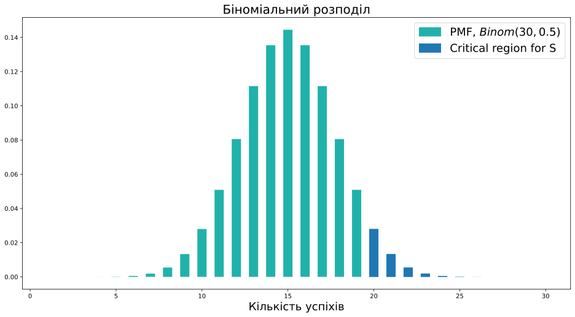
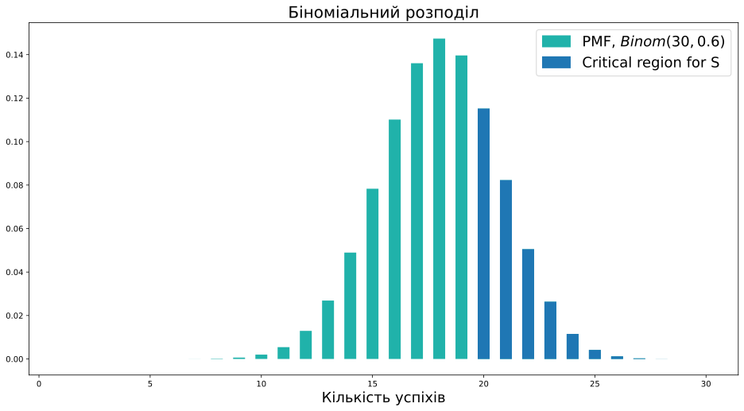
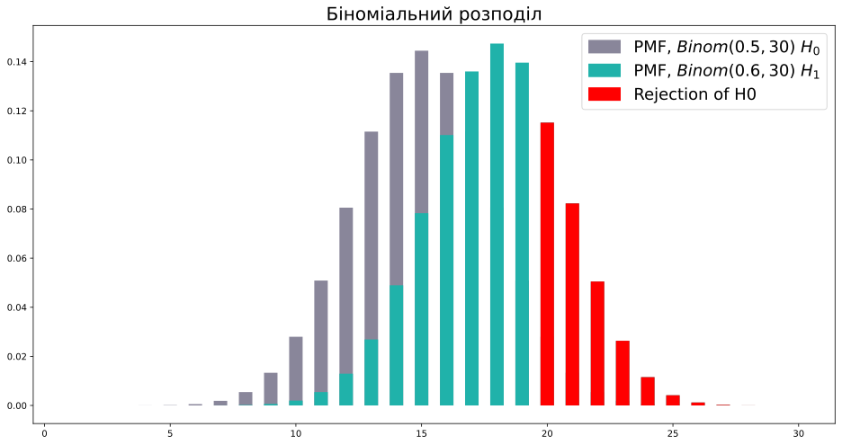

Статистична потужність
Прикладний статистичний аналіз
Ігор Мірошниченко
КНУ імені Тараса Шевченка, ФІТ
Потужність статистичного критерію
Хибно-негативна помилка
Раніше ми звертали увагу тільки на \(\alpha\) — рівень значущості.
Цей параметр контролює ймовірність виявлення помилки I роду (FPR, хибно-позитивна помилка): відхилення \(H_0\), коли вона насправді вірна.
В термінах бізнесу: в яку кількість неефективних проєктів ми готові вкладати ресурси?
Так! Для цього достатньо ніколи не відкидати \(H_0\)
\[ S \equiv 0, \alpha = 0 \]
Якщо є помилка I роду, то є і помилка II роду — хибно-негативна помилка (FNR): приймаємо \(H_0\), коли насправді вірною є \(H_1\).
В термінах бізнесу: яку кількість ефективних проєктів ми готові впустити?
\[ \beta = \text{FNR} = \mathbb{P}(S=0|H_1) \]
Критерій для пори року ❄️☀️
\[ H_0: \text{на вулиці літо} \]
\[ H_1: \text{на вулиці не літо} \]
\[ \begin{equation} Q = \begin{cases} 1, & \text{якщо на вулиці йде сніг} \\ 0, & \text{інакше} \end{cases} \end{equation} \]
\[ \begin{equation} S = Q = \begin{cases} 1, & \text{якщо }Q = 1, \text{ відхиляємо } H_0 \\ 0, & \text{якщо }Q = 0, \text{ не відхиляємо } H_0 \end{cases} \end{equation} \]
\[ \alpha = \text{FPR} = \mathbb{P}(\text{йде сніг}|\text{зараз літо}) < 0.001 \]
\[ \beta = \text{FNR} = \mathbb{P}(\text{не йде сніг}|\text{зараз не літо}) > 0.9 \]
Як бачимо, критерій доволі марний.
Потужність статистичного критерію (power, True Positive Rate, істинно-позитивне значення) — це ймовірність правильно відхилити \(H_0\), коли вона істинно є хибною, тобто здатність виявити ефект, якщо він дійсно існує.
\[ \text{Power} = 1 - \beta = \mathbb{P}(S=1|H_1) \]
У нашому прикладі: \(\text{Power} = 1 - 0.9 = 0.1\)
Потужність
Згадаємо задачу про доставку:
\(H_0: \mu = 0.5 \\H_1: \mu > 0.5 \\Q = \text{кількість підтверджених замовлень} \\\alpha = 0.05 \\ S = \{Q \geq 20\}\)
Припустимо, що вірна \(H_1\): \(\mu = 0.6\)

\[\text{Power} = \mathbb{P}(Q \geq 20|\mu = 0.6)\]
\[\text{Power} = \mathbb{P}(Q \geq 20|\mu = 0.6)\]
False Positive Rate is 4.9%
Power is 29.1%Видно, що потужність близько \(30\%\). Це доволі маленьке значення, адже якщо наш продукт прибутковий, то ми побачимо це за допомогою нашого тесту лише з ймовірністю в \(30\) відсотків. Ми легко можемо пропустити ефект.
Python та потужність
def get_stat_power(N, mu_h0, mu_alternative, alpha):
'''Обчислює статистичну потужність критерію для біноміального розподілу
Параметри:
N - кількість бернуллієвських експериментів (розмір вибірки)
mu_h0 - імовірність успіху в нульовій гіпотезі
mu_alternative - передбачувана ймовірність успіху в експерименті
alpha - рівень значущості критерію
'''
binom_h0 = binom(n=N, p=mu_h0)
binom_alternative = binom(n=N, p=mu_alternative)
# обчислюємо критичне значення
critical_value = binom_h0.ppf(1 - alpha) + 1
# обчислюємо потужність за формулою
return 1 - binom_alternative.cdf(critical_value - 1)
Подивимося, що буде, якщо ми проведемо експеримент на 300 клієнтах.
Python та потужність
Прийнято вважати, що прийнятною для роботи потужністю вважається \(80\%\).
Подивимося, як змінюється потужність при зростанні розміру вибірки, і скільки потрібно провести експериментів, щоб детектувати ефект при \(\mu=0.6\) в \(80\%\) випадків.
Код
n_grid = numpy.arange(10, 600, 10)
# можемо обчислити
power = get_stat_power(n_grid, 0.5, 0.6, alpha=0.05)
pyplot.figure(figsize=(12, 7))
pyplot.title('Потужність для $\mu = 0,6$', fontsize=18)
pyplot.xlabel('Кількість пробних поставок', fontsize=15)
pyplot.ylabel('Потужність', fontsize=15)
pyplot.plot(n_grid, power)
pyplot.axhline(0.8, ls='--', color='red', label='Power = 80%')
# рахуємо мінімальний розмір вибірки для потужності у 80%
min_n = n_grid[power >= 0.8].min()
pyplot.axvline(min_n, ls='--', color=turquoise, label=f'N = {min_n}')
pyplot.legend(fontsize=15)
pyplot.show()Python та потужність
А що, якщо ми хочемо детектувати ще менший ефект? Наприклад, якщо хочемо відкидати гіпотезу при \(\mu = 0.51\). Часто поліпшення ймовірності успіху на \(1\%\) може бути значущим для продукту, тому це питання не позбавлене сенсу.
Код
n_grid = numpy.arange(10, 30000, 59)
power = get_stat_power(n_grid, 0.5, 0.51, alpha=0.05)
pyplot.figure(figsize=(12, 7))
pyplot.title('Потужність для $\mu = 0.51$', fontsize=18)
pyplot.xlabel('Кількість пробних поставок', fontsize=15)
pyplot.ylabel('Потужність', fontsize=15)
pyplot.plot(n_grid, power)
pyplot.axhline(0.8, ls='--', color='red', label='Power = 80%')
# рахуємо мінімальний розмір вибірки для потужності у 80%
min_n = n_grid[power >= 0.8].min()
pyplot.axvline(min_n, ls='--', color=turquoise, label=f'N = {min_n}')
pyplot.legend(fontsize=15)
pyplot.show()Перед кожним експериментом аналітику варто замислюватися над питанням тривалості тесту та кількості учасників.
Для цього потрібно зрозуміти:
- Який ефект є для завдання практично значущим?
- Скільки знадобиться випробовуваних, щоб детектувати цей ефект частіше, ніж у \(80\%\) випадків?
Python та потужність
З графіків видно, що для детектування меншого ефекту потрібен більший розмір вибірки.
Подивимося, як для фіксованого \(N = 30\) змінюється потужність для різних параметрів \(\mu\).
Код
mu_grid = numpy.linspace(0.5, 1, 500)
power = get_stat_power(30, 0.5, mu_grid, alpha=0.05)
pyplot.figure(figsize=(12, 7))
pyplot.title('Power for $N = 30$', fontsize=18)
pyplot.xlabel('$\mu$', fontsize=15)
pyplot.ylabel('Потужність', fontsize=15)
pyplot.plot(mu_grid, power)
pyplot.axhline(0.8, ls='--', color='red', label='Power = 80%')
min_mu = mu_grid[power >= 0.8].min()
pyplot.axvline(min_mu, ls='--', color=turquoise, label='$\mu$ = {:.2f}'.format(min_mu))
pyplot.legend(fontsize=15)
pyplot.show()У нашому експерименті ми добре детектуємо ефект, тільки якщо ймовірність успіху в генеральній сукупності хоча б \(72\%\).
Мінімальний виявлений ефект (MDE)
Мінімальний виявлений ефект
Мінімальний виявлений ефект (MDE, Minimal Detectable Effect) — це найменший ефект, який ми можемо виявити за допомогою експерименту (як правило, при \(80\%\) потужності).
У нашому прикладі \(\text{MDE} = +0.22\)
Більш формально
\(\text{MDE}\) для гіпотези \(\mathsf{H}_0: \mu = \mu_0\) — це мінімальний ефект \(\delta\), за якого критерій рівня значущості \(\alpha\) для перевірки цієї гіпотези за істинного параметра \(\mu = \mu_0 + \delta\) та розміру вибірки \(N\) відкидатиме \(\mathsf{H}_0\) з потужністю більшою, ніж \(1 - \beta\).
Python та MDE
def binom_test_mde_one_sided(N, mu0, alpha=0.05, min_power=0.8):
'''Обчислює MDE одностороннього критерію для перевірки гіпотези mu = mu0 у задачі з доставкою
Параметри:
N (int) - розмір вибірки
mu0 (float) - імовірність успіху в нульовій гіпотезі
alpha (float) - рівень значущості критерію
min_power (float) - бажана потужність
Повертає:
float - MDE'''
delta_grid = numpy.linspace(0, 1 - mu0, 500)
power = get_stat_power(N, mu0, mu0 + delta_grid, alpha=alpha)
# виберемо відповідні delta і повернемо першу
fit_delta = delta_grid[power >= min_power]
return fit_delta[0]
Зазвичай \(\text{MDE}\) рахують не просто так, а нерозривно з ним іде питання про визначення розміру вибірки.
Визначення розміру вибірки
У нашому завданні ми знайшли \(30\) клієнтів, не обчислюючи спочатку, скільки їх знадобиться. Але що якщо отриманий \(\text{MDE}\) занадто великий і потрібно зробити його меншим, оскільки очікувані зміни набагато менші? Тоді вирішується зворотне завдання: за необхідним \(\text{MDE}\) визначити обсяг вибірки. Якщо ми говоримо, що хочемо детектувати \(+10\) в.п., тобто \(60\%\) успішних доставок, то потрібно знайти 160 пробних клієнтів, це видно з попередніх графіків. Якщо 30 осіб нам, наприклад, шукати місяць, такий тест може затягнутися майже на півроку. Тому варто подумати про те, щоб виділити додаткові ресурси на пошук клієнтів, наприклад, залучити маркетологів.
Довірчі інтервали
Довірчий інтервал
Довірчий інтервал (CI, confidence interval) — множина значень параметра \(\mu_0,\) для яких гіпотеза \(\mu = \mu_0\) не відкидається критерієм рівня значущості \(\alpha\) з відомою ймовірністю \(\geq 1 - \alpha\).
З визначення випливає, що різні критерії можуть породжувати різні довірчі інтервали. У цій частині розглянемо, які інтервали породжуються двостороннім критерієм.
Для цього з кроком \(0.001\) переберемо значення \(\mu \in [0, 1]\) і перевіримо гіпотези.
Python та довірчий інтервал
# Функція з минулої лекції
def two_sided_criterion_nonsym(n, mu, alpha):
'''Будує двосторонній критерій для несиметричної задачі з доставкою
Параметри:
n: кількість доставок в експерименті
mu: імовірність успіху в нульовій гіпотезі
alpha: рівень значущості критерію
Повертає:
C1, C2 для критерію S = {Q <= C1 або Q >= C2}
'''
binom_h0 = binom(n=n, p=mu)
# аналогічно односторонньому критерію
c2 = binom_h0.ppf(1 - alpha/2) + 1
# за викладками вище
c1 = binom_h0.ppf(alpha/2) - 1
return c1, c2success_cnt = 19
mu_grid = numpy.arange(0, 1, 0.001)
mu_no_rejection = []
for mu_h0 in mu_grid:
c1, c2 = two_sided_criterion_nonsym(30, mu_h0, alpha=0.05)
if success_cnt > c1 and success_cnt < c2:
mu_no_rejection.append(mu_h0)
print(f'95% confidence interval: {min(mu_no_rejection)} -- {max(mu_no_rejection)}')95% confidence interval: 0.439 -- 0.8Не відхиляємо \(H_0\)!
success_cnt = 28
mu_grid = numpy.arange(0, 1, 0.001)
mu_no_rejection = []
for mu_h0 in mu_grid:
c1, c2 = two_sided_criterion_nonsym(30, mu_h0, alpha=0.05)
if success_cnt > c1 and success_cnt < c2:
mu_no_rejection.append(mu_h0)
print(f'95% confidence interval: {min(mu_no_rejection)} -- {max(mu_no_rejection)}')95% confidence interval: 0.78 -- 0.991Відхиляємо \(H_0\)!
Код
mus_h0 = [0.2, 0.438, 0.439, 0.8, 0.81, 0.9]
success_cnt = 19
fig, axes = pyplot.subplots(3, 2, figsize=(15, 15))
for mu_h0, ax in zip(mus_h0, axes.flatten()):
binom_h0 = binom(n=30, p=mu_h0)
probs = binom_h0.pmf(x_grid)
# будуємо вертикальні стовпці від 0 до ймовірності
ax.vlines(x_grid, 0, probs, linewidth=8.0, color=turquoise, label=f'PMF, $Binom({mu_h0}, 30)$')
# окремо зобразимо критичну область критерію
c1, c2 = two_sided_criterion_nonsym(30, mu_h0, alpha=0.05)
crit_reg = (x_grid <= c1) | (x_grid >= c2)
ax.vlines(x_grid[crit_reg], 0, probs[crit_reg], linewidth=8.0, label='Критична область для S')
is_rejection = success_cnt <= c1 or success_cnt >= c2
ax.axvline(success_cnt, ls='--', label=f'Q = {success_cnt}' + (' відкинуто' if is_rejection else ' не відкинуто'), color='gray', alpha=0.4)
rejection_prob = probs[crit_reg].sum()
ax.set_title(f'$\mu = {mu_h0}$', fontsize=12)
ax.legend()Односторонні довірчі інтервали
У минулій частині ми використовували двосторонній критерій, і з нього вийшов довірчий інтервал.
Але на минулій лекції ми говорили, що двосторонній критерій потрібен вкрай рідко.
Контролювати помилку False Positive нам потрібно тільки для відхилень у бік, корисний для бізнесу.
У випадку завдання з доставкою це отримання більшої конверсії в успіх.
Спробуємо скористатися одностороннім критерієм для побудови довірчого інтервалу.
Python та односторонній інтервал
def make_binom_criterion(n, mu=0.5, alpha=0.05):
'''Будує критерій для задачі з доставкою
Параметри:
n: кількість доставок в експерименті
mu: ймовірність успіху в нульовій гіпотезі
alpha: рівень значущості критерію
Повертає:
C для критерію S = {Q >= C}
'''
binom_h0 = binom(n=n, p=mu)
q = binom_h0.ppf(1 - alpha)
return q + 1success_cnt = 19
mu_grid = numpy.arange(0, 1.001, 0.001)
mu_no_rejection = []
for mu_h0 in mu_grid:
crit_val = make_binom_criterion(n=30, mu=mu_h0, alpha=0.05)
if success_cnt < crit_val:
mu_no_rejection.append(mu_h0)
print(f'95% confidence interval: {min(mu_no_rejection)} -- {max(mu_no_rejection)}')95% confidence interval: 0.467 -- 1.0Коли ми використовували двосторонній інтервал, ми отримали ліву межу \(0.439 < 0.467\).
Виходить, що односторонній інтервал з точки зору лівої межі дає нам більше інформації. При цьому з точки зору правої межі ми втрачаємо інформацію зовсім. Вона дорівнює 1 просто тому, що ймовірність не може бути більшою.
Насправді зазвичай на праву межу не дивляться під час аналізу, коли ми шукаємо позитивний ефект.
Python та односторонній інтервал
Припустимо, ми отримали не \(19\) успіхів, а \(22\). Побудуємо 2 види інтервалів.
success_cnt = 22
mu_grid = numpy.arange(0, 1, 0.001)
mu_no_rejection = []
for mu_h0 in mu_grid:
c1, c2 = two_sided_criterion_nonsym(30, mu_h0, alpha=0.05)
if success_cnt > c1 and success_cnt < c2:
mu_no_rejection.append(mu_h0)
print(f'Two-sided 95% confidence interval: {min(mu_no_rejection)} -- {max(mu_no_rejection)}')Two-sided 95% confidence interval: 0.542 -- 0.877
success_cnt = 22
mu_grid = numpy.arange(0, 1.001, 0.001)
mu_no_rejection = []
for mu_h0 in mu_grid:
crit_val = make_binom_criterion(n=30, mu=mu_h0, alpha=0.05)
if success_cnt < crit_val:
mu_no_rejection.append(mu_h0)
print(f'One-sided 95% confidence interval: {min(mu_no_rejection):.2f} -- {max(mu_no_rejection)}')One-sided 95% confidence interval: 0.57 -- 1.0Python та односторонній інтервал
Навіщо ж ми тоді взагалі використовуємо двосторонній інтервал? Щоб це зрозуміти, подивимося, який вигляд мають візуально межі для одностороннього інтервалу.
Код
fig, axes = pyplot.subplots(3, 2, figsize=(15, 15))
for mu_h0, ax in zip(mus_h0, axes.flatten()):
binom_h0 = binom(n=30, p=mu_h0)
probs = binom_h0.pmf(x_grid)
# будуємо вертикальні стовпці від 0 до ймовірності
ax.vlines(x_grid, 0, probs, linewidth=8.0, color=turquoise, label=f'PMF, $Binom({mu_h0}, 30)$')
# окремо зобразимо критичну область критерію
c = make_binom_criterion(30, mu_h0, alpha=0.05)
crit_reg = (x_grid >= c)
ax.vlines(x_grid[crit_reg], 0, probs[crit_reg], linewidth=8.0, label='Критична область для S')
is_rejection = success_cnt >= c
ax.axvline(success_cnt, ls='--', label=f'Q = {success_cnt}' + (' відкинуто' if is_rejection else ' не відкинуто'), color='gray', alpha=0.4)
rejection_prob = probs[crit_reg].sum()
ax.set_title(f'$\mu = {mu_h0}$', fontsize=12)
ax.legend()Критична область стала більшою через те, що там тепер знаходиться не \(2.5\%\), а \(5\%\) за побудовою. При цьому лівої критичної області просто не існує, тому за великих \(\mu\) не відбувається потрапляння \(19\) до неї, а значить ми не відкидаємо гіпотезу.
Зауважимо, що якби ми будували двосторонній інтервал, але з удвічі більшою \(\alpha\), потрапляння в праву критичну область траплялися б за тих самих \(\mu\), що й в односторонньому критерії. Тому часто для пошуку односторонньої межі будують двосторонній довірчий інтервал із більшою \(\\alpha\), ігноруючи при цьому праву межу. Це зручно, оскільки можна користуватися тільки однією функцією для критерію.
Python та односторонній інтервал
Перевіримо, що вийде при \(\alpha = 0.1\).
success_cnt = 19
mu_grid = numpy.arange(0, 1, 0.001)
mu_no_rejection = []
for mu_h0 in mu_grid:
c1, c2 = two_sided_criterion_nonsym(30, mu_h0, alpha=0.1)
if success_cnt > c1 and success_cnt < c2:
mu_no_rejection.append(mu_h0)
print(f'Two-sided 90% confidence interval: {min(mu_no_rejection):.3f} -- {max(mu_no_rejection):.3f}')Two-sided 90% confidence interval: 0.467 -- 0.778Властивість довірчого інтервалу
Яким би не було істинне значення \(\mu = \mu_0\), ймовірність того, що воно перебуває між \(\mathcal{L}(Q)\) і \(\mathcal{R}(Q)\), не нижча, ніж \(1 - \alpha\).
Значення \(1 - \alpha\) називається рівнем довіри довірчого інтервалу.
\[ P(\mathcal{L}(Q) < \mu_0 < \mathcal{R}(Q)) \geqslant 1 - \alpha \]
Важливо, що випадковість тут прихована саме в \(\mathcal{L}\) і \(\mathcal{R}\), а не в \(\mu_0\).
Параметр \(\mu_0\) невідомий, але ми припускаємо його константним і не випадковим.
Перевірка властивості
Для цього зафіксуємо \(\mu_0\) і проведемо множину експериментів:
- Генеруємо вибірку з розподілу з параметром \(\mu_0\)
- Обчислюємо статистику \(q\)
- Рахуємо довірчий інтервал для \(\alpha = 0.05\)
Перевіряємо, що частка випадків, коли параметр \(\mu_0\) опинився всередині меж інтервалу, хоча б \(95\%\)
def my_binomial_confint(n, alpha, q):
'''Обчислює довірчий інтервал для вибірки з розподілу Бернуллі
n (int) - кількість елементів у вибірці
alpha (float) - рівень значущості критерію
q (float) - реалізація статистики критерію
'''
mu_grid = numpy.arange(0, 1.001, 0.001)
mu_no_rejection = []
for mu_h0 in mu_grid:
c1, c2 = two_sided_criterion_nonsym(30, mu_h0, alpha=0.05)
if q > c1 and q < c2:
mu_no_rejection.append(mu_h0)
return min(mu_no_rejection), max(mu_no_rejection)
numpy.random.seed(2024)
N_EXPERIMENTS = 1000
SAMPLE_SIZE = 30
latent_mu = 0.5 # «істинне» значення параметра
binom_true = binom(n=SAMPLE_SIZE, p=latent_mu) # «істинний» розподіл
confint_fail_cases = 0
for i in range(N_EXPERIMENTS):
q = binom_true.rvs() # генеруємо одразу суму елементів
L, R = my_binomial_confint(n=SAMPLE_SIZE, alpha=0.05, q=q)
if L < latent_mu < R:
pass # все добре
else:
confint_fail_cases += 1
print(1 - confint_fail_cases / N_EXPERIMENTS)0.962Але це дуже довго! Це через те, що під час кожного експерименту потрібно побудувати довірчий інтервал, а отже перевірити 1000 можливих параметрів \(\mu_0\).
Довірчий інтервал Вілсона
Розглянутий зараз алгоритм побудови довірчого інтервалу працює занадто довго. У Python є функції, які дозволяють швидше розрахувати інтервал. Наприклад, можна скористатися методом Вілсона і функцією proportion_confint
from statsmodels.stats.proportion import proportion_confint
numpy.random.seed(20231212)
N_EXPERIMENTS = 1000
SAMPLE_SIZE = 30
latent_mu = 0.5 # «істинне» значення параметра
binom_true = binom(n=SAMPLE_SIZE, p=latent_mu) # «істинний» розподіл
confint_fail_cases = 0
for i in range(N_EXPERIMENTS):
q = binom_true.rvs()
L, R = proportion_confint(
count=q, # кількість успіхів
nobs=SAMPLE_SIZE, # розмір вибірки
alpha=0.05,
method='wilson'
)
if L < latent_mu < R:
pass # все добре
else:
confint_fail_cases += 1
print(1 - confint_fail_cases / N_EXPERIMENTS)0.943CI Вілсона vs. N
Залежність частки успішних влучень \(\mu\) у довірчий інтервал від розміру вибірки зобразимо на графіку.
Код
n_grid = numpy.arange(1, 1000, 25).tolist()
interval_success_rate = []
for n in n_grid:
confint_fail_cases = 0
for i in range(N_EXPERIMENTS):
binom_true = binom(n=n, p=latent_mu)
q = binom_true.rvs()
L, R = proportion_confint(
count=q, # кількість успіхів
nobs=n, # розмір вибірки
alpha=0.05,
method='wilson'
)
if L < latent_mu < R:
pass # все добре
else:
confint_fail_cases += 1
interval_success_rate.append(1 - confint_fail_cases / N_EXPERIMENTS)
pyplot.figure(figsize=(12, 7))
pyplot.title('Успішність довірчого інтервалу Вілсона за різного розміру вибірки', fontsize=15)
pyplot.xlabel('Розмір вибірки', fontsize=15)
pyplot.ylabel('Частка влучень $\mu$ в інтервал', fontsize=15)
pyplot.plot(n_grid, interval_success_rate, label='Успішність в експериментах')
pyplot.axhline(0.95, ls='--', label='Бажана успішність', color='red')
pyplot.legend(fontsize=15)
pyplot.show()Підсумки
Алгоритм перевірки гіпотез
- Бізнес-задача / гіпотеза
- Формулювання нульової та альтернативної гіпотез:
- \(\mathsf{H}_0: \mu = 0.5\)
- \(\mathsf{H}_1: \mu > 0.5\)
- Статистика критерію \(Q = \sum_{i=1}^n \text{Bernoulli}(\mu)\), \(q = 19\)
- Розподіл \(Q\) при \(\mathsf{H}_0\) та критична область (\(p\)-значення) при \(\alpha = 0.05\)
- \(\text{MDE} (n, \text{power}, \alpha)\)
- Довірчий інтервал для \(\mu\)
Дякую за увагу!